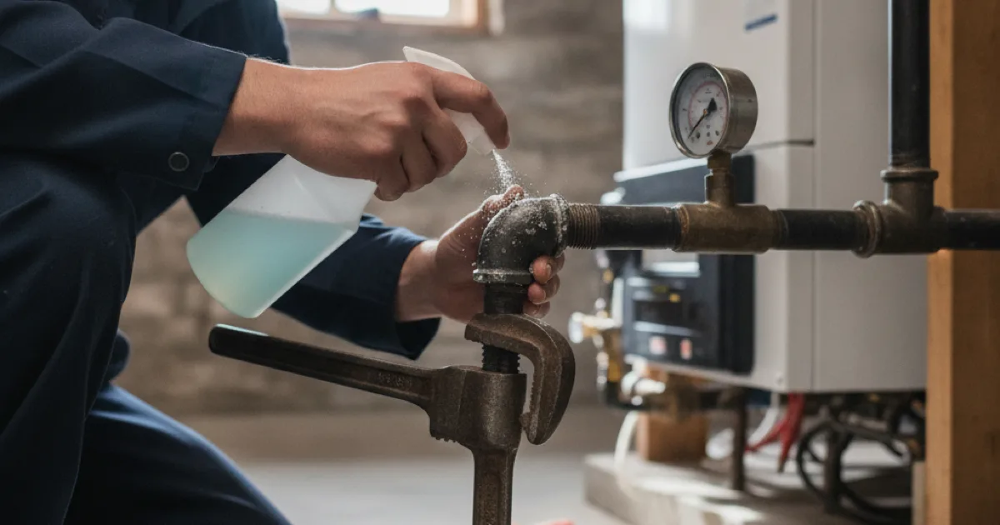

Licensed Gasfitter Services in Westchester County, NY
Gas work is not the place to cut corners. Dan's Drains handles gas line repairs, connections, and safety checks for Westchester County homes with the care and licensing this work demands.
- Licensed & Insured
- Same-Day Service Available
- Upfront Pricing
- 15+ Years Local Experience

Need a plumber in Westchester County? We can usually help the same day.
What Our Gas Line Services Include
We handle the gas piping that feeds appliances like water heaters, boilers, ranges, and dryers. That covers running new lines for an appliance, repairing damaged or corroded pipe, and checking connections for leaks.
If you suspect a problem with an existing line, our gas line repair and leak response service is the right place to start. We also connect gas appliances safely — from installing a gas-fired water heater to a full gas boiler installation and hookup — as part of a broader project.
Why Gas Safety Comes First
Natural gas is safe when the plumbing is done right and dangerous when it is not. That is why we treat every gas job carefully, test our connections, and never rush a shortcut.
If you ever smell gas — a rotten-egg odor — leave the house and call your gas utility from outside first. The NFPA's natural gas safety guidance is a good primer on what to do, and we handle the repair side once the immediate danger is addressed.
Talk to a local Westchester County plumber today.
Signs of a Gas Line Problem
Some gas issues are obvious and some are subtle. Call for help if you notice:
- A sulfur or rotten-egg smell near an appliance or line.
- A hissing sound near a gas connection.
- A gas appliance that will not stay lit or burns with an odd flame.
- Dead or discolored vegetation near an outdoor gas line.
When in doubt, treat it as urgent. It is always better to have us check and find nothing than to ignore a real leak.
Gas Piping in Older Westchester Homes
Many homes in the Armonk area have been added onto and updated over the decades, which means gas piping of different ages and materials. Older connections can loosen or corrode over time, especially where a line meets an appliance.
When we work on a gas project, we look at the whole run, not just the one fitting in front of us, so a fix on one appliance does not leave an older problem hiding down the line.
When to Call a Licensed Gasfitter
Gas is one area where do-it-yourself is genuinely risky. Call a licensed plumber any time you are adding a gas appliance, moving a line, or you suspect a leak.
We will handle the work safely and to code, and if the project also touches your water heater or other plumbing, we can take care of the rest of the job under one roof.
Frequently Asked Questions
What should I do if I smell gas?
Leave the house right away without flipping switches, and call your gas utility from outside or from a neighbor's. Once the immediate danger is handled, we can repair the line that caused it.
Are you licensed to work on gas lines?
Yes. Dan's Drains is a licensed and insured plumbing company, and we handle gas line work with the care and code compliance it requires.
Can you connect a new gas appliance?
Yes. Whether it is a gas water heater, range, or dryer, we can run or extend the line and connect the appliance safely.
How do you check for a gas leak?
We inspect connections and test the line for leaks using proper methods, then confirm the repair holds before we consider the job done.
Is a small gas smell ever normal?
A faint, brief odor when a burner lights can be normal, but a lingering or strong smell is not. When in doubt, treat it as a leak and get it checked.
Ready to book? Reach Dan’s Drains for fast, upfront plumbing help.